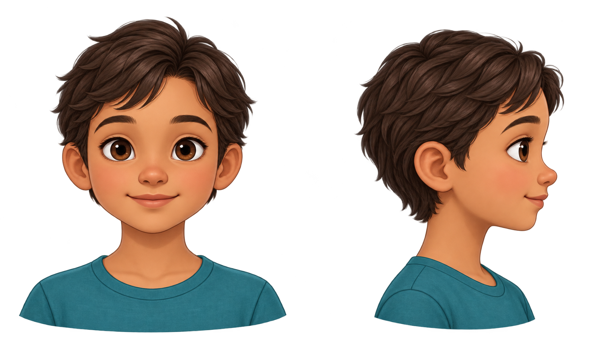

Why does your head hurt?
You have probably had a headache before. Maybe it felt like a tight band across your forehead, a pounding pain on one side, or an ache behind your eyes. Those differences can give us clues about what is happening.
Where does a headache actually hurt?
You might immediately think, “My brain!” But your brain tissue does not feel pain in the same way your skin does.
Think of your brain like the inside of a house. If the smoke alarm starts beeping, it tells you something is happening, but the alarm itself is not necessarily where the problem began.
Your brain receives and interprets pain signals. Those signals can come from pain-sensitive structures around the brain and head, including nerves, blood vessels, muscles, and the protective coverings around the brain.
A headache is a pain signal your brain receives, not simply “your brain hurting.”
Headache pattern map
Now use the map to compare where different headaches are usually felt and what other clues often appear.
